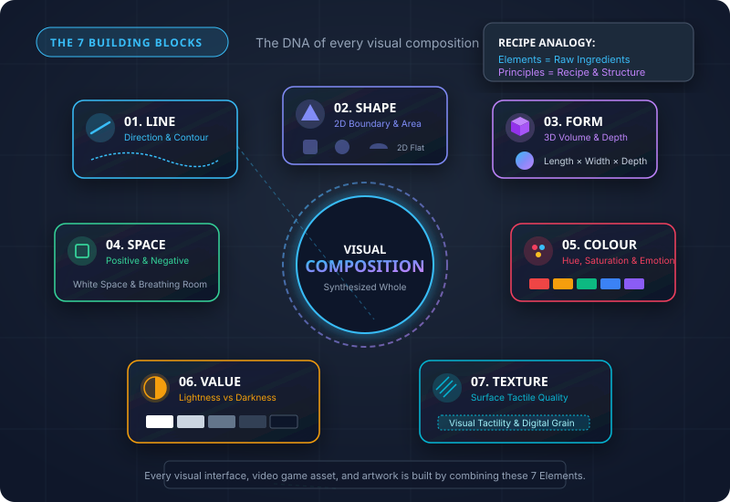
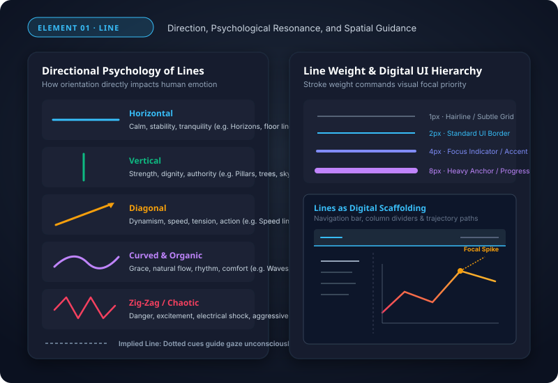
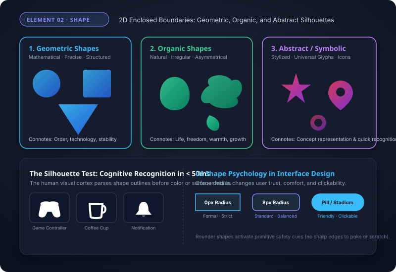
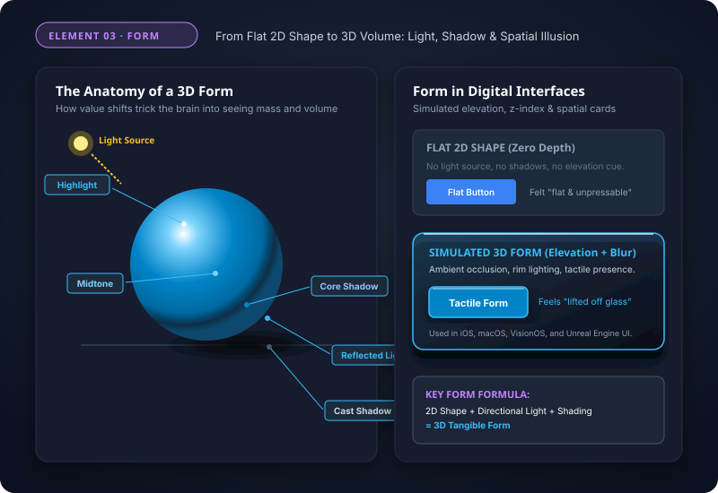
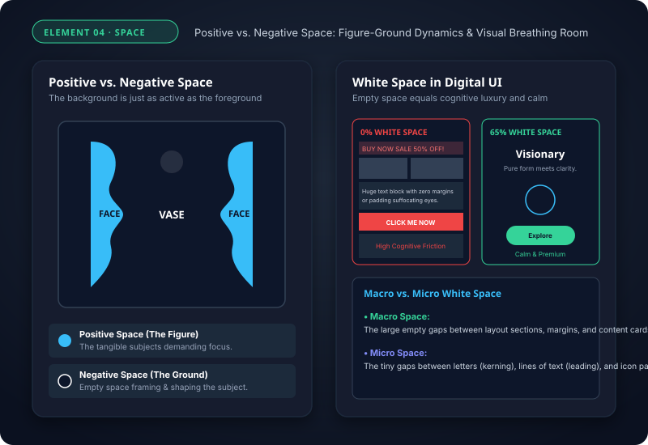
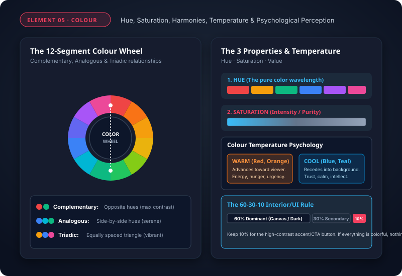
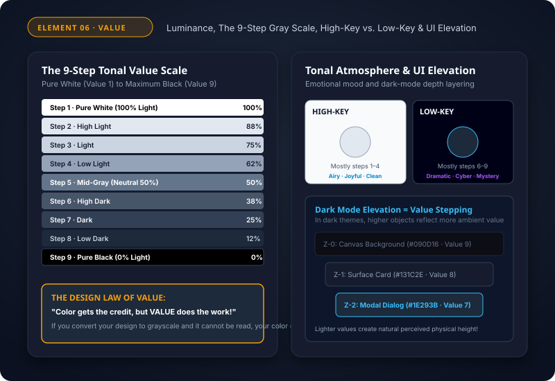
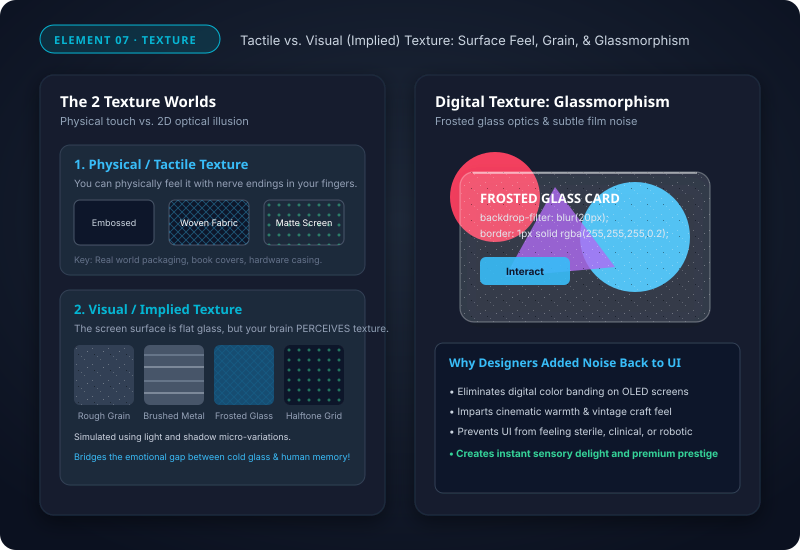
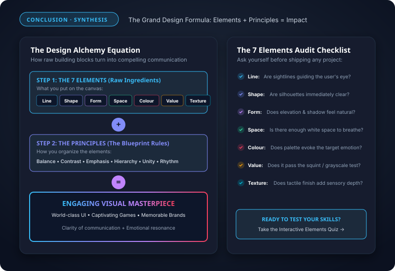

The Basic Elements of Design
Concept
The visual building blocks and sensory vocabulary used to construct every graphic layout, user interface, digital product, and work of art.
The Master Recipe Analogy
If the Principles of Design are the recipe and architectural blueprints, the Elements are the physical raw ingredients: the timber, flour, steel, and pigments from which everything is crafted.
Classroom Checkpoint: The Visual Atom
Look around the room or at your smartphone screen right now. Can you find any visible object that does NOT consist of Lines, Shapes, or Colors?

The Power of Lines
Concept
A continuous mark made on a surface by a moving point. The most fundamental connector of visual thoughts, creating pathfinding, boundaries, and motion.
Key Characteristics & Orientations
- Horizontal: Stability, rest, horizon, calm ground.
- Vertical: Strength, dignity, authority, lofty height.
- Diagonal: Kinetic energy, speed, tension, action.
- Curved: Organic grace, sensory comfort, natural flow.
- Stroke Weight: Thin hairlines for grids vs bold lines for focal spikes.
Classroom Checkpoint: The Kinetic Angle
Why do action sports logos (Nike, Adidas, Puma) and speed lines in anime always angle diagonally instead of laying horizontal?

2D Boundaries: Shape
Concept
A two-dimensional, enclosed area defined by boundaries such as lines, contrasting colors, or value shifts. Possesses height and width, but flat zero depth.
The 3 Core Categories of Shape
- Geometric: Precise, mathematical circles, squares, polygons (order, structure, digital tech).
- Organic: Asymmetrical, fluid, irregular leaves, clouds, bodies (warmth, vitality, nature).
- Abstract / Symbolic: Stylized glyphs, icons, and simplified representations (app icons, branding).
Classroom Checkpoint: The Silhouette Test
Why can you recognize the Batman logo, Mickey Mouse ears, or the Apple logo even when filled with 100% flat pitch black?

3D Volume & Mass: Form
Concept
A three-dimensional object with height, width, and depth; or the illusion of physical mass and tangible volume created on a flat 2D canvas.
The 5 Light Zones Creating 3D Form
- Highlight: Point of direct light reflection (pure brightest point).
- Midtone: The true natural surface hue receiving angled light.
- Core Shadow: The darkest band where the form curves away from light.
- Reflected Light: Ambient light bouncing off the floor back onto the underside.
- Cast Shadow: The dark silhouette projected onto surrounding surfaces.
Classroom Checkpoint: The Illusion of Weight
What single visual element tells your brain whether a sphere is resting on the tabletop or hovering 3 feet in the air?

Visual Breathing Room: Space
Concept
The area between, around, above, below, or contained within elements. It dictates perspective, breathing room, and visual focus across layouts.
Positive Space vs. Negative Space
- Positive Space (Figure): The primary subject matter, characters, text, and active interactive controls.
- Negative Space (Ground / White Space): The background and empty buffer surrounding objects.
- Macro White Space: Large margins separating cards, sections, and headers.
- Micro White Space: Spacing between paragraphs, lines (leading), and letters (kerning).
Classroom Checkpoint: The Luxury Space Paradox
Why do elite luxury brands (Apple, Rolex, Chanel) leave 60%–80% of their websites empty with massive negative space, while discount websites pack every pixel?

Visual Emotion: Colour
Concept
The visual perception of reflected light wavelengths. The most emotionally charged, instant communicator in human visual design.
The 3 Core Dimensions of Colour
- Hue: The distinct name / wavelength family (Red, Cyan, Violet).
- Saturation (Chroma): The purity or intensity (electric neon vs muted slate).
- Temperature: Warm (Red/Orange = advances, energetic) vs Cool (Blue/Green = recedes, serene).
- Harmonies: Complementary (opposites), Analogous (neighbors), Triadic (triangle).
Classroom Checkpoint: The CTA Magnet
Why do the highest-converting digital checkout buttons use a complementary accent color that appears nowhere else on the interface?

Tonal Luminance: Value
Concept
The relative lightness or darkness of a hue or surface, ranging on a gradient from purest white (100% luminance) to absolute black (0% luminance).
The Master Law of Value
"Colour gets the credit, but VALUE does all the heavy work!"
- High-Key: Compositions dominated by light values (steps 1–4): optimistic, pure, ethereal.
- Low-Key: Compositions dominated by deep dark values (steps 6–9): dramatic, cinematic, mystery.
- Readability: Without sufficient value contrast, colored text becomes completely unreadable.
Classroom Checkpoint: The Squint Test
Why do master painters, movie cinematographers, and veteran UI designers squint their eyes when evaluating a layout?

Tactile Quality: Texture
Concept
The physical feel or visual illusion of a surface's tactile characteristics (smooth, rough, grainy, matte, glossy, frosted, woven).
Tactile vs. Visual (Implied) Texture
- Tactile Texture: Physical surface you can feel with fingers (embossed packaging, book linen, matte phone chassis).
- Visual / Implied Texture: Optical 2D simulation on flat glass using lighting, noise, and shadow shaders.
- Glassmorphism: Frosted translucent glass blur bringing depth to modern software (iOS, VisionOS, Windows 11).
- Grain & Noise: Prevents digital color banding and imparts tactile warmth to digital screens.
Classroom Checkpoint: The Glass Revival
Why did modern tech companies reintroduce subtle noise grain, glassmorphic frosted blur, and haptic clicks after 10 years of sterile flat design?

The Grand Synthesis
The Grand Formula
Great design is never an accident. It is the deliberate alchemy of the 7 Elements organized with the wisdom of the Principles of Design.
Your 7-Element Mastery Recap
- Line: Directs the user's eye and carves structure.
- Shape: Provides instantaneous 50ms silhouette recognition.
- Form: Imparts tangible 3D mass, depth, and elevation.
- Space: Gives breathing room, elegance, and cognitive calm.
- Colour: Stirs raw emotion and commands priority action.
- Value: Anchors visual contrast and guarantees readability.
- Texture: Delivers sensory warmth and physical tangibility.
Final Mastery Challenge: The Designer's Eye
Next time you open your favorite video game, app, or website: pause for 10 seconds. Identify each of the 7 elements at play.
Launch Interactive Knowledge Quiz →